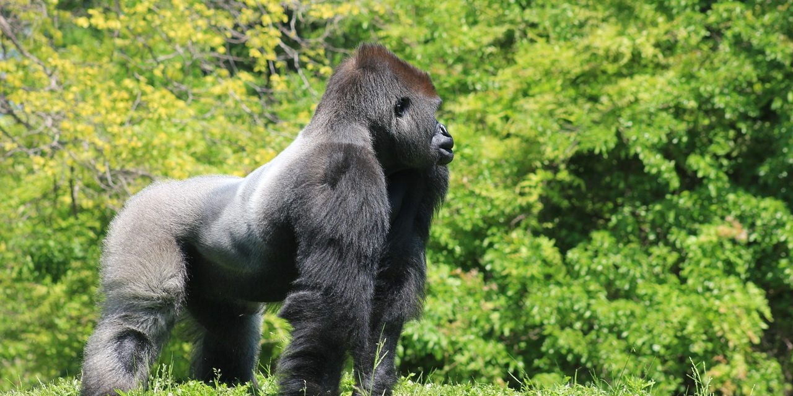

Here are the gorillas
Taxonomy
A formal description of the species was provided by Thomas Savage in 1847, allying the new species to an earlier description of the chimpanzee as Troglodytes gorilla in a group of eastern simians he referred to as "orangs". The author selected the specific epithet for the name given by Hanno to "wild men" he had noted on the east coast of Africa, presumed by Savage to be a species of orang. The population is recognised as two subspecies.
Read MoreWestern lowland gorilla

The western lowland gorilla (Gorilla gorilla gorilla) is one of two subspecies of the western gorilla (Gorilla gorilla) that lives in montane, primary and secondary forests and lowland swamps in central Africa in Angola, Cameroon, Central African Republic, Republic of the Congo, Democratic Republic of the Congo, Equatorial Guinea and Gabon. It is the nominate subspecies of the western gorilla, and the smallest of the four gorilla subspecies.
Read MoreCross River gorilla

The Cross River gorilla (Gorilla gorilla diehli) is a subspecies of the western gorilla (Gorilla gorilla). It was named a new species in 1904 by Paul Matschie, a mammalian taxonomist working at the Humboldt University Zoological Museum in Berlin, but its populations were not systematically surveyed until 1987.
Read MoreEastern gorilla

The eastern gorilla (Gorilla beringei) is a critically endangered species of the genus Gorilla and the largest living primate. At present, the species is subdivided into two subspecies. Grauer's gorilla, formerly known as the eastern lowland gorilla (G. b. graueri) is more populous, at about 3,800 individuals. The mountain gorilla (G. b. beringei) has only about 1,000 individuals. The International Union for the Conservation of Nature mentioned illegal hunting in its assessment of threats to the species.
Read MoreMountain gorilla

There are two populations: One is found in the Virunga volcanic mountains of Central Africa, within three National Parks: Mgahinga, in south-west Uganda; Volcanoes, in north-west Rwanda; and Virunga, in the eastern Democratic Republic of Congo (DRC). The other population is found in Uganda's Bwindi Impenetrable National Park. Some primatologists speculate the Bwindi population is a separate subspecies, though no description has been finalized. As of June 2018, there were more than 1,000 individuals.
Read MoreMountain gorillas

The rest of the worldwide mountain gorilla population is in the nearby Virunga Mountains. A 2006 census of the mountain gorilla population in the park showed that its numbers had increased modestly from an estimated 300 individuals in 1997, to 320 individuals in 2002 to 340 individuals in 2006, and 400 in 2018. Disease and habitat loss are the greatest threat to the gorillas. Poaching is also a threat.
Read MoreEastern lowland gorilla
The eastern lowland gorilla (Gorilla beringei graueri) or Grauer's gorilla, is a subspecies of eastern gorilla endemic to the mountainous forests of eastern Democratic Republic of the Congo. Important populations of this gorilla live in the Kahuzi-Biega and Maiko National Parks and their adjacent forests, the Tayna Gorilla Reserve, the Usala forest and on the Itombwe Massif.
Read More